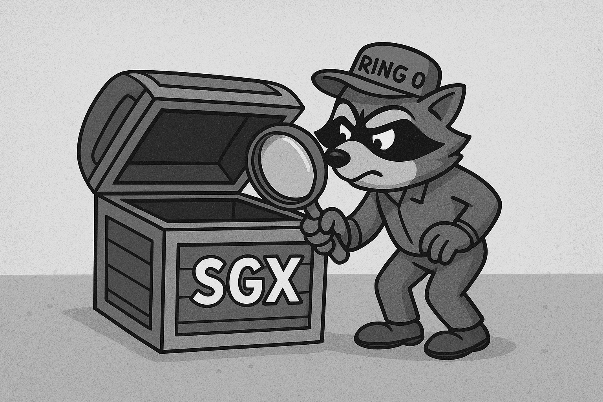

From 2016 to 2020, I developed software-based side-channel analysis tools for Intel Software Guard Extensions (SGX), one of the first widely deployed commercial trusted execution environments (TEEs). Intel SGX introduced a new threat model where even privileged software (e.g., a compromised operating system or hypervisor) is considered untrusted. While designed to protect sensitive user data, this model also exposed SGX to powerful software-based side-channel attacks, most notably cache attacks.

I developed CacheZoom, one of the first privileged-adversary cache side-channel attacks on Intel SGX. CacheZoom exploited timer interrupts to amplify side-channel leakage, enabling highly precise attacks. Building on this work, we extended the analysis to cryptographic implementations deployed inside SGX for remote attestation. By combining CacheZoom with lattice-based cryptanalysis, we demonstrated the first break of SGX’s remote attestation mechanism, noted as CacheQuote.
Our work emphasized the importance of constant-time cryptography as the de facto mitigation strategy for TEEs. However, we also showed that constant-time programming is difficult to achieve in practice, and that an advanced privileged-adversary attacks CopyCat can still undermine a wide range of cryptographic implementations.
This research influenced both academia and industry. It motivated Intel and cryptographic library maintainers to adopt standardized constant-time implementations and inspired the development of AEX-Notify, an architectural defense against interrupt-driven side channels. Similar mitigations are now employed in Intel TDX confidential VMs, which inherit SGX’s threat model.